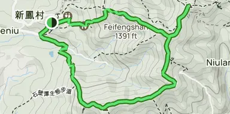
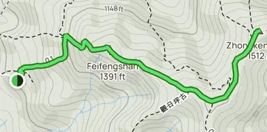
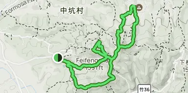
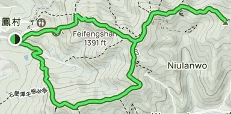
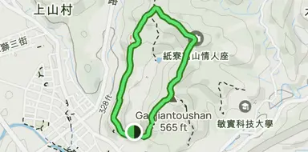
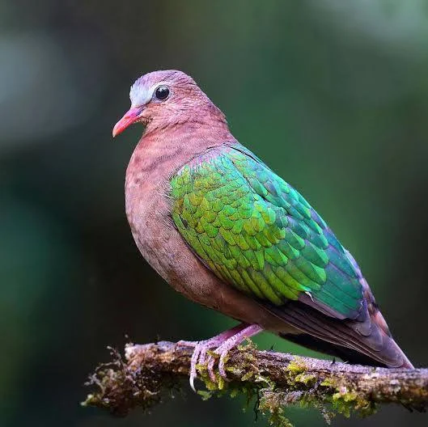

an old Hakka township tucked into the Hsinchu hills
竹塹丘陵間的客家老庄
Overview總覽
Within Hsinchu County is Qionglin, a township with a history that is very old, along with some fantastic scenery. It is around 200 years old already, but it maintains its rural vibe very well. Additionally, it is close enough to Hsinchu City to be conveniently accessible.
There are mountains and hiking trails to be found throughout Qionglin Township. Furthermore, there are also farms and cultural sites to explore within this area. Thus, when visiting Qionglin, visitors can discover its nature, its history, and how locals live in this region. For individuals interested in learning about the countryside or Hakka culture in general, there are plenty of things to do and explore here in Qionglin Township.
History & Origins歷史源流
A fuller timeline, drawn from the Qionglin Township Gazetteer and local archives — from the settlement's first appearance on a Qing-era map, through the temples, canals, and schools that built it, to how the township looks today.
1756–1759乾隆21–24年
First appears on a map九芎林
The name Jiuqionglin appears on the Qianlong-era Taiwan Map, marking the area as a frontier point bordering indigenous territory — the earliest known written trace of the settlement.
1775乾隆40年
Organized settlement begins
Jiang Shengzhi and Liu Chenghao led the first organized effort to reclaim and settle the Qionglin area, pushing inland along the Youluo River to clear farmland.
1784乾隆49年
Fuchang Temple is founded福昌宮
Fuchang Temple was established at Shibitan, tied to the early settlers' worship of the Three Mountain Kings — years before Guangfu Temple was ever built.
1785乾隆50年
Cultivation reaches Xiashan
Liu Chenghao and others expanded farmland around Xiashan, one of the earliest documented stages of the settlement's growth.
1786乾隆51年
The Lin Shuangwen Rebellion
Unrest from the island-wide Lin Shuangwen Rebellion reached Qionglin, though settlers kept developing the area through it.
1789乾隆54年
An irrigation canal is dug
The Gaogui, or Fugulin, irrigation canal was completed, helping expand farmland further across the settlement.
1800嘉慶5年
Guangfu Temple is founded廣福宮
Jiang Shengzhi, Liu Chenghao, and other pioneering families established Guangfu Temple, dedicated to the Three Mountain Kings — the temple that remains the township's spiritual centre today.
1824道光4年
Irrigation expands further
Major works, including the Xiashan and Wusanzhang irrigation systems, pushed farmland even further across the township.
1843道光23年
A market street forms九芎林街
The Jiuqionglin market street was established — a sign the settlement had grown into an organized local trading centre.
1867同治6年
Residents organize
Local residents petitioned for community improvements, a sign of an increasingly established local administration.
1874同治13年
Administration reorganized
The Qing government restructured local administration across Taiwan, Qionglin included.
1895
Japanese rule begins
Japan took control of Taiwan, and Qionglin entered fifty years of Japanese colonial administration.
1897明治30年
A local office opens
A local administrative office was established in Qionglin under the new Japanese system.
1898明治31年
Qionglin's first school芎林公學校
Qionglin Public School was founded, an early milestone for formal education in the township.
1910s
Roads and rail arrive
Transportation and infrastructure expanded, including light-rail connections and growing school facilities.
1920大正9年
The name is shortened九芎林 → 芎林
Japanese administrators dropped the first character of Jiuqionglin, officially shortening it to today's Qionglin, alongside a wider reorganization of local administration.
1930s
Steady growth
Roads, schools, agriculture, and local organizations continued developing through the decade.
1945
Taiwan returns to the Republic of China
Japanese rule ended with the close of the Second World War, and Taiwan was returned to the Republic of China.
1946
A township office, and local elections
The modern Qionglin Township Office was established, and local representative elections began.
1947
A junior high school, and the 228 Incident
Qionglin Junior High School was founded the same year the island-wide 228 Incident also reached the township.
1950
Hsinchu County, eleven villages
Qionglin became part of the reorganized Hsinchu County, divided at the time into eleven villages.
1951–1957
Infrastructure catches up
Local government, schools, health services, roads, and farming infrastructure all expanded considerably through these years.
1968
Nine years of compulsory schooling
Taiwan's Nine-Year National Education system began, and the local school was renamed Hsinchu County Qionglin Junior High School.
1970s
Roads, bridges, and clinics
Community development expanded with new roads, bridges, public buildings, health facilities, and farming infrastructure.
1980
The Science Park opens
The Hsinchu Science Park officially opened nearby, setting off decades of technological growth that would eventually reach Qionglin's southern edge.
1980s
Roads, waste, and farmland
Qionglin kept improving roads, public facilities, agricultural production, community organizations, and waste management.
1988
Guangfu Temple rebuilt
A reconstruction of Guangfu Temple was completed, marked with a ceremony welcoming the Three Mountain Kings back to their restored home.
1990s
Community associations grow
Community development associations spread across the township, alongside continued urban planning, roads, farming infrastructure, and cultural activity.
1999
The 921 Earthquake
The major 921 Earthquake struck Taiwan, and Qionglin recorded damage and an emergency response of its own.
2000s
Culture, farming, and environment
Cultural, agricultural, environmental, and transportation projects continued to develop across the township.
2003
The Tung Blossom Festival芎林客家桐花祭
Qionglin held major Hakka cultural events, including the Qionglin Hakka Tung Blossom Festival.
2004
The township gazetteer is published芎林鄉志
The Qionglin Township Gazetteer was completed, documenting the area's geography, history, government, economy, religion, people, education, culture, and ecology in full.
Today今日
From hamlet to township
Twelve villages make up Qionglin Township today, home to roughly 20,000 people across 41 square kilometres. More than 95 percent of the population remains Hakka, even as the township's southern edge grows into a quiet satellite community for workers commuting to the Hsinchu Science Park.
Secondary Forest次生林
The hills around Qionglin are covered in secondary forest — woodland that grew back after the settlers' fields. Walk its trails, and look out for the shy animals that live there.
The Forest Trails步道
Much of the woodland around Qionglin is secondary forest — trees that grew back after the original cover was cleared, which suits a township whose first settlers cleared this valley for farmland. Five trails, most of them around Feifeng Mountain, take you in.

Feifeng Mountain Loop飛鳳山
Moderate5.8 km2–2.5 hr
The easiest way to take in the whole mountain. The loop starts at Dai-Quan Temple, a richly decorated temple more than a century old, and a side path leads to a quiet Guanyin temple. Stone stairs alternate with dirt paths under the trees, and in spring the tung trees shed their white blossoms across the path. Viewpoints along the way open up over the surrounding valley.

Feifeng Mountain
Moderate3.4 km1–1.5 hr
A shorter, steadier climb through dense secondary forest on granite steps, old stone slabs, and earthen ridges. The path is wide and easy to follow, though it can get steep. At the top, a viewing pavilion looks out over the land; on very clear days Taipei 101 is just visible far away, and the sun can be watched sinking toward the Taiwan Strait.

Feifeng Mountain to Dabangen
Hard10.1 km4.5–5 hr
The longest and toughest of the five. The mountain takes its name from the shape of its ridge, said to resemble a phoenix in flight with its neck stretched out. Stone steps near the temples give way to bare soil, exposed roots, and sandstone higher up, all of which can be very slippery. The reward is a stand of old trees with huge, thin, wall-like roots.

Guanriping Historic Trail觀日坪古道
Moderate7.6 km2.5–3 hr
A ridge walk through older forest on broad stone stairs, dirt ridgelines, and paths laced with roots. Time it for late afternoon: from the ridge you can watch the sunset, then the city lights of Hsinchu and Zhubei come on as the sky turns orange. Taipei 101 can also be seen on exceptionally clear days.

Wenlin Ancient Trail文林古道
Moderate2.7 km0.5–1 hr
The gentlest outing, and the one that feels most like the countryside: tunnels of bamboo, citrus orchards, dirt paths, and steps made of natural roots, with a temple along the way. Views stretch over the farmland of Zhubei and Qionglin.
Distances and times are estimates taken from AllTrails and will vary with pace and route.
Wildlife of the Forest林間動物
The woods and orchards around Qionglin are home to a quiet cast of animals. Most are shy or nocturnal, so you are more likely to find signs of them than to see them.
Spinous country rat台灣刺鼠
Niviventer coxingi
A forest rodent with stiff, spiny fur on its back and a pale belly. It feeds on seeds and fruit, and in doing so helps spread trees through the forest.

Common emerald dove翠翼鳩
Chalcophaps indica
A shy forest dove with shimmering emerald-green wings, usually seen walking quietly along the shaded ground or flushing low through the trees.
Small Indian civet麝香貓
Viverricula indica
A slender, spotted night-time hunter with a ringed tail. Elusive and rarely seen, it is one of the forest's more secretive residents.
Insular mole台灣鼴鼠
Mogera insularis
A burrowing mammal that spends nearly its whole life underground. Fresh mounds of loose earth beside a path or orchard are usually the only sign it is there.
Malayan night heron黑冠麻鷺
Gorsachius melanolophus
A stocky heron with a black crest that stalks slowly across woodland floors and grassy ground, freezing in place when it senses you.
Videos影片
Short films from around the township — the old street, the temples, the orchards in season. This page will grow as new footage is added.
A walk down the old street老街漫步Space reserved for your own footage.
Qionglin through the seasons四季的芎林Space reserved for your own footage.
Sources & Credits資料來源
The references, sites, and people this project draws on — filled in as the research comes together.